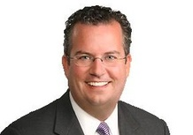

<div id="speakers">
<div class="cell">
<p><b>Robert Shea</b> is a principal and a member of the organizational improvement team at Grant Thornton. He leads Grant Thornton’s Cost, Budget, and Performance Management Community of Practice as well as a number of performance management engagements, including the United States Departments of Agriculture, Homeland Security, and Veterans Affairs, as well as the United States National Endowment for the Arts. He was most recently at the U.S. Office of Management and Budget (OMB) as Associate Director for Administration and Government Performance. Before joining OMB, Robert served as Counsel to the Senate Committee on Governmental Affairs. See more <a href="http://www.grantthornton.com/people/bios/s/shea-robert.aspx#sthash.U7Ra9BaT.dpuf">here</a>.</p>
</div>
</div>